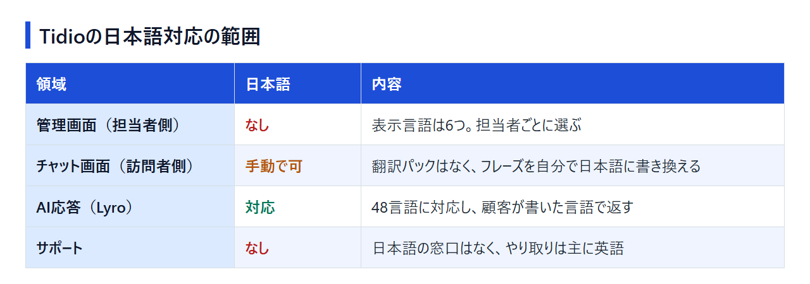
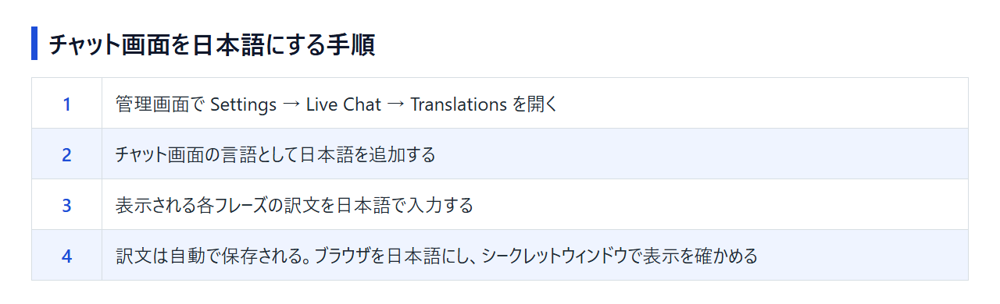

Tidioは日本語で使える？管理画面・チャット画面・AI応答・サポートの対応範囲
Tidio（ティディオ）が日本語に対応しているかどうかは、紹介記事によって「対応」「非対応」と結論が分かれています。理由は単純で、同じTidioでも、担当者が操作する管理画面と、サイト訪問者に表示されるチャット画面（ウィジェット）と、AIによる自動応答とで、日本語の扱いがまったく違うからです。Tidioは契約していないため、公式ヘルプと公開情報をもとに、どこまで日本語で回せるかを領域ごとに整理しました。読み終えるころには、Tidioのまま日本語サイトに入れるか、日本語で運用できるチャットツールに切り替えるかを決められるはずです。
結論：Tidioは管理画面が英語、チャット画面とAI応答は日本語にできる
Tidioの管理画面は日本語を選べませんが、チャット画面は文言を手動で日本語に書き換えられ、AIエージェントのLyroは日本語で返答できます。日本語で問い合わせられるサポート窓口はありません。

日本語対応を4つの領域で確認する
領域ごとの状況は次のとおりです。
- 管理画面（担当者側）：日本語はない。表示言語は6つで、担当者ごとに選ぶ
- チャット画面（訪問者側）：日本語の翻訳パックはないが、フレーズを自分で日本語に書き換えれば日本語で表示できる
- AI応答（Lyro）：日本語を含む48言語に対応し、顧客が書いた言語に合わせて返す
- サポート：日本語の窓口はなく、英語が主要なやり取りの言語
公式の日本語サイトもありません。料金ページや規約、ヘルプはすべて英語で読むことになります。
Tidioのままでよい人・日本語対応ツールを選びたい人
分かれ目は、英語の管理画面を毎日触る担当者がそれを受け入れられるかどうかです。
- Tidioのままでよい人：担当者が英語の管理画面で作業でき、訪問者に見せる文言は自分で日本語に書き換えられる
- 日本語対応ツールを選びたい人：担当者全員が日本語の画面で使いたい、困ったときに日本語で問い合わせたい
後者に当てはまる場合の候補は、後半の代替ツールの章で紹介します。
TidioにはFreeプランがあり、有料プランもカード登録なしで7日間試せます。契約する前に、チャット画面を日本語にしたときの表示を自分のサイトで確かめられます。
管理画面（運営者側）は日本語にできない
担当者が操作する管理画面に日本語はありません。表示言語を切り替える設定はあるものの、選択肢に日本語が含まれていないためです。
選べる表示言語は6つで日本語はない
公式ヘルプが案内している管理画面の表示言語は、英語・ドイツ語・フランス語・スペイン語・イタリア語・ポルトガル語の6つです。「管理画面の一部は日本語」と紹介されることもありますが、公式ヘルプの対応言語に日本語は入っていません。
表示言語は担当者ごとの設定
表示言語の設定は、担当者ごとに分かれています。人によって言語を変えられるものの、日本語がない以上、チーム全員が英語などの画面で作業する前提になります。
英語の管理画面で覚えておきたい設定の場所
日本語化や請求まわりで使う設定は、主に次の2か所です。
- Settings → Live Chat → Translations：チャット画面の文言を日本語に書き換える場所
- Settings → Project → Billing：請求書のダウンロードや請求先情報の編集をする場所
ブラウザの翻訳機能で管理画面を日本語表示にして補う人もいます。ただ、訳されたメニュー名は公式ヘルプの英語表記と一致しないため、ヘルプを見ながら設定するときは英語表記で場所を探すと迷いません。
訪問者向けのチャット画面を日本語にする手順
チャット画面は、Translationsで各フレーズを日本語に書き換えれば日本語で表示できます。一度設定すれば、訪問者のブラウザの言語に合わせて自動で切り替わります。
用意されている翻訳パックに日本語はない
Tidioには、チャット画面の文言をまとめて切り替える翻訳パックが用意されています。対応しているのは英語・フランス語・ドイツ語・イタリア語・ポルトガル語・ロシア語・スペイン語で、日本語はありません。何も設定しなければ、日本語サイトの訪問者にも英語などの文言が表示されます。
Translationsで各フレーズを日本語に書き換える
日本語のパックがないぶん、フレーズを1つずつ自分で入力します。流れは次のとおりです。
- 管理画面で Settings → Live Chat → Translations を開く
- チャット画面の言語として日本語を追加する
- 表示される各フレーズの訳文を日本語で入力する
- 訳文は自動で保存される。ブラウザの言語を日本語にし、新しいシークレットウィンドウで自分のサイトを開いて表示を確かめる

ボタン名や入力欄の並びは、公式ヘルプの「Change and add Languages in your Chat Widget」に沿って進めると確実です。訳文は、自社サイトのほかのページと同じ言葉づかいにそろえておきます。
ブラウザの言語で自動的に切り替わる
日本語を追加すると、訪問者のブラウザの言語設定に合わせて表示言語が自動で選ばれます。日本語のブラウザで見た人には日本語の文言が、英語のブラウザで見た人には英語の文言が表示される仕組みです。海外からのアクセスがあるサイトでも、英語の文言を残したまま日本語を足せます。
会話の中身は自動翻訳されない
翻訳されるのは、あらかじめ用意された文言だけです。訪問者が日本語で書いたメッセージを、担当者向けに英語へ訳す機能ではありません。有人チャットで答えるなら、日本語の問い合わせを日本語で返せる担当者が必要になります。
AIエージェントLyroは日本語で返答できる
Lyroは日本語を含む48言語に対応し、顧客の言語を検出して同じ言語で返します。Lyroの言語設定は、チャット画面の翻訳とは別に行います。
日本語を含む48言語で、顧客の言語に合わせて返す
Lyroは、顧客が書いた言語を読み取り、その言語で答えるAIエージェントです。管理画面が英語でも、Translationsで日本語化したチャット画面と組み合わせれば、訪問者とのやり取りを日本語でそろえられます。
対応言語は「全言語」か「指定した言語だけ」を選べる
Lyroには、返答する言語を「全言語」にするか「指定した言語だけ」に絞るかの設定があります。絞った場合、許可していない言語で質問されると、その言語には対応していないと伝えたうえで、既定の言語で返答します。
- 全言語：日本語の質問には日本語で返す
- 指定した言語だけ：日本語を許可に入れていないと、日本語の質問に英語など既定の言語で返す
言語を絞って運用するなら、日本語を許可に入れ忘れていないかを最初に確かめておきます。
日本語の返答を試すときに見ておきたいこと
日本語の返答がどこまで自然かは、公式情報だけでは判断できません。FreeプランでもLyroは累計50会話まで無料で使え、7日間のトライアル中はLyroを含む全機能を試せます。50会話は月ごとに戻る枠ではなく一度きりなので、試す質問はあらかじめ絞っておきます。見ておきたいのは次の3点です。
- 回答の元データ：Lyroは読み込ませたFAQなどを元の言語のまま扱う。日本語の質問に自社の言い回しで答えさせたいなら、FAQや案内文も日本語で用意しておく
- 言葉づかい：敬語の調子は、Lyroへの指示（Guidance）で自社サイトの文体に合わせられる。指示を入れる前と後で返答を比べる
- 固有名詞：商品名やサービス名が、正しい表記で返ってくるか
日本語サポート・日本からの支払い・請求書
日本語で問い合わせられる窓口はなく、公式は英語を主要なやり取りの言語としています。支払いはUSD建てのクレジットカード自動課金が基本で、銀行振込は上位のPlus・Premiumで選べます。
サポートは英語のチャット・メール・ヘルプセンター
公式のサポート手段は4つです。
- AIの窓口（Lyro）：24時間365日
- 有人のライブチャット：Plus・Premium向けで、対応は月〜金
- メール：support@tidio.net。週末も対応
- ヘルプセンター：英語の記事で設定方法を案内
FreeやStarter、Growthで人に相談したいときの手段は、実質的に英語のメールだけです。日本語で質問できる窓口はどのプランにもありません。
支払いはUSDのカード払いで月次か年次の自動課金
有料プランにアップグレードするときにクレジットカード情報を入力し、以後は月次または年次でUSD建ての自動課金になります。銀行振込（wire transfer）は、上位のPlus・Premiumで選べます。どのカードブランドが使えるか、JCBやPayPalに対応しているかは、公式に記載がありません。JCBをメインに使っている場合は、アップグレードの画面で通るかどうかを確かめる必要があります。
請求書はPDFで取得できる
請求書は Settings → Project → Billing の「Billing details」タブから、PDFで1件ずつダウンロードできます。同じ画面で請求先情報を編集でき、請求書の送付先メールも追加できるため、経理担当にメールで届くようにしておけます。これはカードで課金された分の請求書を受け取る仕組みで、請求書を受け取ってから振り込む国内の「請求書払い」とは別物です。
日本のインボイス制度の登録番号が請求書に載るかどうかは、公式には案内がありません。海外SaaSの利用料は消費税の扱いが国内サービスと異なる場合があるので、経費処理の方法は税理士に確認してください。
日本語で運用したいならチャネルトーク・ChatPlus・Crispも候補
管理画面もサポートも日本語で使いたいなら国産のChatPlus、日本の窓口と円建ての料金で契約したいならチャネルトークが候補です。チャット画面をフレーズの手入力なしで日本語にしたいなら、Crispもあります。
チャネルトーク（Channel Talk）
韓国のChannel Corp.が運営するチャットツールで、日本語の公式サイトと料金ページがあり、料金は円建て（税別）です。無料プランでも接客チャットを使えますが、閲覧・検索できるメッセージは過去30日以内に限られます。有料プランは、1年分を一括で前払いして25%割引を受けた場合の表示で、Early Stageが月2,700円から、Growthが月9,000円からです。オペレーターのシートなどは従量で追加します。AIエージェントのALFは32か国語に対応し、問い合わせに参加するごとの従量課金です。導入相談用に日本の電話窓口もあります。
- 向いている人：日本の窓口に相談しながら、円建ての料金で、まず無料プランから始めたい
日本語の料金ページで、年払いと月払いの違いや従量で増える費用を確かめられます。
ChatPlus（チャットプラス）
東京・丸の内に拠点を置く国産のチャットツールで、管理画面も公式サイトもヘルプも日本語です。無料プランはなく、代わりに10日間の無料トライアルがあり、初期費用は0円です。最安のミニマムは税抜で月契約月1,980円、年契約月1,500円で、1アカウント・1サイトまで使えます。請求書払いにも対応しています。ミニマムで請求書払いにできるのは年契約（先払い）のときだけで、ビジネスライト以上なら請求書払いを選べます。全プランで専門スタッフのサポートを受けられます。
ただし、自動応答まで使うならプランが上がります。シナリオ型のチャットボットはビジネスライト（税抜・年契約で月9,800円）から、AIによる自動応答はAIライト（同じく月50,000円）からです。Lyroのように日本語のAI応答まで求めると、ミニマムとは費用の桁が変わります。
- 向いている人：有人チャットが中心で、請求書払いや日本語のサポートを重視したい
プランごとのアカウント数・サイト数と、チャットボットの種類の違いを料金表で比べられます。
Crisp
フランス発のチャットツールで、料金は会話数ではなくワークスペース単位の定額（USD）です。訪問者向けのチャット画面は日本語を含む60以上の言語に翻訳済みです。訪問者のブラウザの言語を自動で判別して表示するので、Tidioのようにフレーズを自分で訳す手間はかかりません。担当者が使うデスクトップアプリも日本語表示に対応しています（スマホアプリの対応言語に日本語はありません）。支払いはVisa・Mastercard・American ExpressとPayPalに対応しており、JCBは公式に記載がありません。Essentials以上を年払いにする場合は、サポートに頼めば銀行送金も使えます。Freeは2シートまで、有料のMiniは月払いで月$45で、全プランを14日間カード登録なしで試せます。
- 向いている人：フレーズを自分で訳さずにチャット画面を日本語にしたい、担当者2人までならFreeで回したい
ワークスペース単位の定額料金と、プランごとのシート数・AIクレジットの違いを比べられます。
Tidioの料金と、日本語化を無料で試す始め方
Tidioには課金対象の会話が月50件まで使えるFreeプランがあり、有料プランは7日間カード不要で試せます。解約すると次回請求日まで使えたあと、Freeに戻ります。
Freeプランと7日間トライアルで確かめられること
Freeプランは$0で、課金対象の会話（担当者が返信した会話）が月50件、席（担当者の枠）は10席まで使えます。Lyroや自動化（Flows）だけで完結した会話は、この50件に数えません。7日間のトライアルが終わると自動でFreeに移るので、トライアルを始めても勝手に有料へ切り替わる心配はありません。
日本語で使えるかを確かめるなら、次の順番で試すと無駄がありません。
- Translationsでチャット画面を日本語にし、自分のサイトで表示を見る
- Lyroの言語設定で日本語が許可されているかを確かめ、累計50会話の無料枠の範囲で日本語の質問を試す
- 担当者の表示言語を英語などに決め、日々の操作を画面で追えるかを確かめる
有料プランの料金の目安
有料プランの料金は、年払いの場合の月額表示で次のとおりです。1ドル=157円換算（執筆時点の目安。為替で変動）で、円の金額も添えています。
- Starter：月$24.17（約3,795円）
- Growth：月250会話で月$49.17から（約7,720円から）
- Plus：月$300（約47,100円）＋従量料金。申し込みは営業担当経由
- Premium：個別見積
この料金にはLyroの使い放題は含まれません。Lyroの無料枠はFree・Starter・Growthのどれでも累計50会話までで、それより多く使うなら、本体プランとは別にLyroの料金が月$32.50から（約5,103円から、年払いの月額表示）かかります。日本語の自動応答を柱にするなら、本体プランとLyroの合計で予算を見積もっておきます。
解約するとFreeプランに戻る
有料プランはいつでも解約でき、次回の請求日までは有料の機能を使えます。その後はFreeプランに移ります。ただし、解約しても残り期間分は返金されません。
料金ページでは、プランごとの課金対象の会話数と、Lyroの会話数に応じた料金を並べて比べられます。
まとめ：英語の管理画面を受け入れられるかで決める
訪問者とのやり取りを日本語にしたいだけならTidioで対応でき、担当者の画面やサポートまで日本語が必要なら日本語対応ツールを選ぶのが確実です。
Tidioの日本語対応は、チャット画面とLyroは日本語にできる、管理画面とサポートは英語のみ、という分かれ方をしています。チャット画面の日本語化はFreeを含む全プランで使えますが、Lyroの自動応答は累計50会話を超えると別料金になります。迷ったら、次の3点で判断してください。
- 担当者が英語の管理画面で毎日の作業を進められるか
- 日本語の問い合わせに、担当者が日本語で答えられる体制があるか
- 日本語のサポートや請求書払いが必要か
3つとも問題なければTidioで十分です。1つでも引っかかるなら、管理画面から日本語で使えるChatPlusや、日本の窓口があるチャネルトークを比べてみてください。請求書払いが条件なら、ChatPlus（ミニマムは年契約の先払いのみ）が候補になります。
登録はFreeプランから始められ、有料プランへはアップグレードの画面でカード情報を入れて切り替えます。